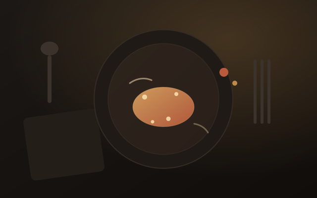
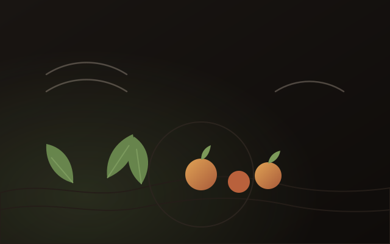
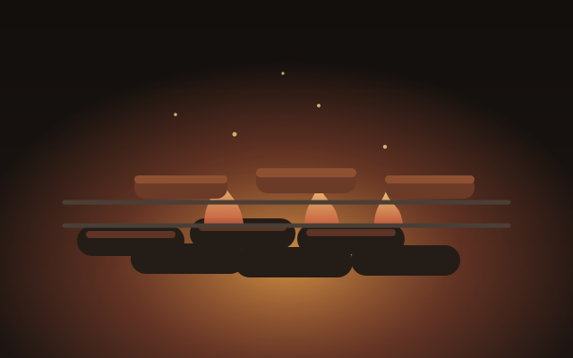

法式料理根基
從 Pourcel 兄弟的餐桌到米其林三星的廚房，經典法式的分寸感與盤面邏輯，是所有嘗試的底子。
關於我
照片：江振誠受訪畫面，來源 PDIS／Wikimedia Commons （CC BY 3.0）
我是江振誠（André Chiang），1976 年出生於台北士林，淡水商工餐飲管理科出身。 學生時代被派進亞都麗緻的巴黎廳，從刷鍋、備料開始學起 —— 「初心」那本書，就是從那個階段開始寫的。
1997 年到西華飯店法國餐廳，擔任 Pourcel 兄弟的首席助理； 2001 年接手法國米其林三星 Le Jardin des Sens 的執行主廚。 之後落腳新加坡，創立 Restaurant ANDRÉ、Burnt Ends、Bincho，再回台開 RAW。 2011 年起推動 Octaphilosophy「八角哲學」， 希望把對食材的敬意，變成每個年輕廚師都能帶走的東西。
料理
技法是根基，食材是主角，剩下的交給火候、溫度與直覺。
從 Pourcel 兄弟的餐桌到米其林三星的廚房，經典法式的分寸感與盤面邏輯，是所有嘗試的底子。
讓台灣的季節說話：葉菜、根莖、海鮮與發酵，用新的結構講老土地的故事。
聖賽巴斯蒂安式炭烤、備長炭火直燒，以及用Technique 重新書寫的川菜與粵菜。
餐廳

新加坡 · 2011–2018。八角哲學的起點，米其林二星，連續五年登上全球50最佳餐廳。

台北大直 · 2014–2024。以台灣季節食材為靈感的創新料理，米其林二星、台灣最佳餐廳。

新加坡 · 2013 至今。聖賽巴斯蒂安式爐火炭烤，亞洲50最佳最高第10名。
法國巴黎十區 · 2014 至今。Bistronomy 創新季節料理，2015 Le Fooding 最佳餐廳。
新加坡萊佛士 · 2026。帶 RAW 團隊重返獅城，開業五個月即摘米其林二星。
新加坡 · 2013 至今。源自大阪的日式炭火燒烤，備長炭直火造就焦香。
成都 · 2018。用主廚的視角重寫川菜：保留豐富味覺，添上雅趣與層次。
瑞士史丹福酒店法國餐廳 · 2009–2011。掌舵一年半即登上全球50最佳餐廳。
輔仁大學駐校廚藝大師、亞洲大學與崑山科大講座教授，RAW 結束後推動廚藝學院。
榮譽
2006 – 2007
Discovery 頻道選為「亞洲10大最佳青年主廚」；2007 年《時代》雜誌兩度稱讚為「印度洋上最偉大的廚師」，並獲選全球最佳150位名廚。
2016
Restaurant ANDRÉ 獲新加坡米其林指南二星，為台灣首位獲評米其林二星的餐廳創辦人；同年獲選中華民國十大傑出青年。
2017
Restaurant ANDRÉ 登上聖沛黎洛全球50最佳餐廳第14名，亞洲50最佳餐廳第2名；同年 RAW 也進入亞洲50最佳名單，獲台灣最佳餐廳。
2018
獲頒亞洲50大餐廳獎項終身成就獎，為第一位獲此殊榮的台灣人；同年 RAW 獲台北米其林指南一星，隔年升上二星。
2024 – 2026
2024 年 RAW 結束營業並規劃轉型廚藝學院；2026 年重返新加坡萊佛士酒店打造「1887 by André」，八月獲米其林二星。
著作
2013 年，平安文化。回望從亞都巴黎廳開始的第一段廚師人生。
2016 年，天下文化。Octaphilosophy 的完整理念與實踐紀錄。
2023 年，天下文化。三十年後再談一次認真做事的理由。
聯絡
品牌合作、餐飲顧問、廚藝講座與媒體採訪歡迎來信，通常一天內回覆。